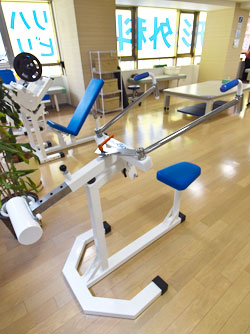
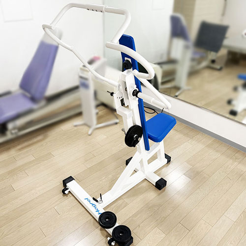
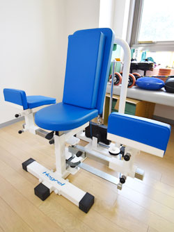
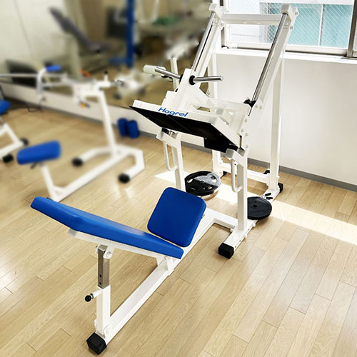

Hogrel（ホグレル）
ホグレルとは
ホグレルは、比較的軽い負荷で肩甲骨周辺や股関節・骨盤周辺の筋肉をリラックスした状態で動かすことを目的としたマシンです。
筋肉をリラックスさせて繰り返し動かすことで、血流を促進しながら筋肉を柔軟にすることができます。
肩こり、腰痛、冷え性などの緩和や、姿勢の改善などにも効果的です。
全国の整形外科や治療院に導入され利用者の方のリハビリをサポートしたり、プロスポーツの現場に導入される等、実績のあるマシンです。
ホグレルで期待される運動効果
- 柔軟性向上
- 体幹アプローチ
- 筋バランス調整
- 動作改善
- 関節可動域調節
- 神経伝達促進
マシンのご紹介
当院では、4種類のマシンをご用意しております。
DPs(ディッピングS)
マシンにまかせて肘を上げ下げすることで肩甲骨、鎖骨周辺が動かされます。
四十肩や肘、手首の痛みの原因に対してアプローチすることができます。

MT(マルチスロー)
腕を開いたり上腕の外旋動作を行い、下半身と連動した上半身の柔軟性と強さを獲得します。胴体前面、脇腹、腕の付け根、肩甲骨など様々な部位にアプローチ可能です。

ITs(インナーサイS)
脚を開閉することで股関節周りの柔軟性を改善します。
腰背部の緊張緩和、腰痛改善、股関節可動域の改善に効果があります。

NTH(ネバータイトハム)
マシンの軌道に従って力を抜いて脚を曲げ伸ばしすることで、ハムストリングやふくらはぎが動かされます。
